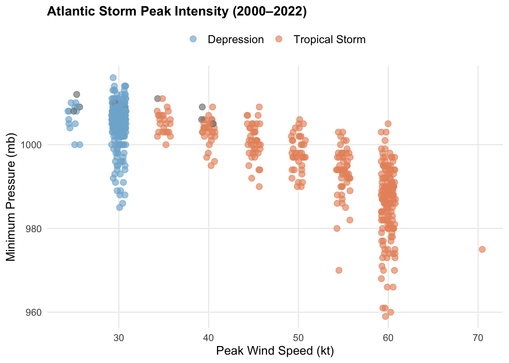

This template follows the interactive data visualization slides. Please be sure to cross-reference the slides, which contain important conceptual context and comparisons!
Setup
We use the storms dataset from {dplyr} throughout this lab — no external file needed. It contains Atlantic storm tracks with wind speed, pressure, storm status, and geographic position from 1975 to 2022.
Key variables in storms:
| Variable | Type | Description |
|---|---|---|
name |
character | Storm name |
year, month, day, hour |
numeric | Date & time of observation |
lat, long |
numeric | Storm center position |
status |
factor | "tropical depression", "tropical storm", "hurricane", etc. |
category |
numeric | Saffir-Simpson category (1–5; NA for non-hurricanes) |
wind |
numeric | Max sustained wind speed (knots) |
pressure |
numeric | Min central pressure (millibars) |
tropicalstorm_force_diameter |
numeric | Diameter (nautical miles) of TS-force winds |
Rows: 19,537
Columns: 13
$ name <chr> "Amy", "Amy", "Amy", "Amy", "Amy", "Amy",…
$ year <dbl> 1975, 1975, 1975, 1975, 1975, 1975, 1975,…
$ month <dbl> 6, 6, 6, 6, 6, 6, 6, 6, 6, 6, 6, 6, 6, 6,…
$ day <int> 27, 27, 27, 27, 28, 28, 28, 28, 29, 29, 2…
$ hour <dbl> 0, 6, 12, 18, 0, 6, 12, 18, 0, 6, 12, 18,…
$ lat <dbl> 27.5, 28.5, 29.5, 30.5, 31.5, 32.4, 33.3,…
$ long <dbl> -79.0, -79.0, -79.0, -79.0, -78.8, -78.7,…
$ status <fct> tropical depression, tropical depression,…
$ category <dbl> NA, NA, NA, NA, NA, NA, NA, NA, NA, NA, N…
$ wind <int> 25, 25, 25, 25, 25, 25, 25, 30, 35, 40, 4…
$ pressure <int> 1013, 1013, 1013, 1013, 1012, 1012, 1011,…
$ tropicalstorm_force_diameter <int> NA, NA, NA, NA, NA, NA, NA, NA, NA, NA, N…
$ hurricane_force_diameter <int> NA, NA, NA, NA, NA, NA, NA, NA, NA, NA, N…Wrangle data
We create a few focused subsets used throughout the lab.
#........one observation per storm-year (peak intensity).........
# storms has multiple rows per storm (one per 6-hour observation)
# we summarise to peak wind per named storm per year
storms_peak <- storms |>
filter(status %in% c("tropical depression", "tropical storm", "tropical wave")) |>
group_by(name, year, status) |>
summarise(
peak_wind = max(wind, na.rm = TRUE),
min_pressure = min(pressure, na.rm = TRUE),
max_category = max(category, na.rm = TRUE),
.groups = "drop"
) |>
mutate(
# clean up category for labelling
category_label = case_when(
max_category == 1 ~ "Cat 1",
max_category == 2 ~ "Cat 2",
max_category == 3 ~ "Cat 3",
max_category == 4 ~ "Cat 4",
max_category == 5 ~ "Cat 5",
TRUE ~ status
)
)Warning: There were 1202 warnings in `summarise()`.
The first warning was:
ℹ In argument: `max_category = max(category, na.rm = TRUE)`.
ℹ In group 1: `name = "AL011993"`, `year = 1993`, `status = tropical
depression`.
Caused by warning in `max()`:
! no non-missing arguments to max; returning -Inf
ℹ Run `dplyr::last_dplyr_warnings()` to see the 1201 remaining warnings.#.............annual summaries by storm status...................
storms_annual <- storms |>
filter(status %in% c("tropical depression", "tropical storm", "tropical wave")) |>
group_by(year, status) |>
summarise(
mean_wind = mean(wind, na.rm = TRUE),
n_observations = n(),
.groups = "drop"
)
#...........filter to recent decades for cleaner plots...........
storms_2000 <- storms_peak |>
filter(year >= 2000) |>
mutate(
status_label = recode(status,
"tropical depression" = "Depression",
"tropical storm" = "Tropical Storm",
"tropical wave" = "Tropical Wave"
),
status_label = factor(status_label,
levels = c("Depression", "Tropical Storm", "Tropical Wave")),
label = paste0(
"<b>", name, " (", year, ")</b><br>",
"Peak wind: ", peak_wind, " kt · Min pressure: ", min_pressure, " mb"
)
)
pal <- c(
"Depression" = "#7FB3D3",
"Tropical Storm" = "#E8936A",
"Wave" = "#82C99A"
)
glimpse(storms_peak)Rows: 1,202
Columns: 7
$ name <chr> "AL011993", "AL012000", "AL021992", "AL021994", "AL0219…
$ year <dbl> 1993, 2000, 1992, 1994, 1999, 2000, 2001, 2003, 2006, 2…
$ status <fct> tropical depression, tropical depression, tropical depr…
$ peak_wind <int> 30, 25, 30, 30, 30, 30, 25, 30, 30, 45, 30, 40, 30, 30,…
$ min_pressure <int> 999, 1008, 1007, 1015, 1004, 1008, 1010, 1008, 1008, 99…
$ max_category <dbl> -Inf, -Inf, -Inf, -Inf, -Inf, -Inf, -Inf, -Inf, -Inf, -…
$ category_label <chr> "tropical depression", "tropical depression", "tropical…Part 1: ggplotly() — converting a static ggplot
See slides: Two approaches and ggplotly()
Build a static ggplot
We start with a scatter plot of peak wind speed vs. minimum pressure for storms since 2000.
#...................add formatted hover label....................
storms_2000 <- storms_2000 |>
mutate(label = paste0(
"<b>", name, " (", year, ")</b><br>",
"Status: ", category_label, "<br>",
"Peak wind: ", peak_wind, " kt<br>",
"Min pressure: ", min_pressure, " mb"
))
#............................build plot..........................
p <- ggplot(storms_2000,
aes(x = peak_wind, y = min_pressure,
color = status_label, text = label)) +
geom_jitter(size = 2.5, alpha = 0.65, width = 0.8, height = 0) + # jitter x only
scale_color_manual(values = pal, name = NULL) +
labs(
title = "Atlantic Storm Peak Intensity (2000–2022)",
x = "Peak Wind Speed (kt)",
y = "Minimum Pressure (mb)"
) +
theme_minimal(base_size = 12) +
theme(
plot.title = element_text(face = "bold", size = 13),
panel.grid.minor = element_blank(),
panel.grid.major = element_line(color = "grey93"),
legend.position = "top",
legend.text = element_text(size = 11)
)
p
Convert to interactive with ggplotly()
Try it: Hover over any point to see the formatted label. Click a status category in the legend to hide it.Double click a status category to view only that category. Drag to zoom; double-click to reset. The toolbar in the top-right gives additional controls.
Customising ggplotly() output
A few small tweaks make ggplotly() output cleaner:
ggplotly(p, tooltip = "text") |>
layout(
legend = list(orientation = "h", x = 0, y = 1.1),
hoverlabel = list(bgcolor = "white", bordercolor = "grey80",
font = list(size = 12))
) |>
config(displaylogo = FALSE,
modeBarButtonsToRemove = list("select2d", "lasso2d"))Part 2: plot_ly() — native plotly for more control
See slides: plot_ly() grammar and animation
2A — Animated scatter: storm intensity across decades
The frame argument is the key to animation. Plotly creates one frame per unique value and adds a Play/Pause button and year slider automatically.
storms_peak <- storms |>
group_by(name, year, status) |>
summarise(
peak_wind = max(wind, na.rm = TRUE),
min_pressure = min(pressure, na.rm = TRUE),
max_category = max(category, na.rm = TRUE),
.groups = "drop"
) |>
mutate(
# clean up category for labelling
category_label = case_when(
max_category == 1 ~ "Cat 1",
max_category == 2 ~ "Cat 2",
max_category == 3 ~ "Cat 3",
max_category == 4 ~ "Cat 4",
max_category == 5 ~ "Cat 5",
TRUE ~ status
)
)
storms_peak |>
mutate(
# build hover label
hover_text = paste0(
"<b>", name, "</b><br>",
"Year: ", year, "<br>",
"Status: ", category_label, "<br>",
"Peak wind: ", peak_wind, " kt<br>",
"Min pressure: ", min_pressure, " mb"
)
) |>
plot_ly(
x = ~peak_wind,
y = ~min_pressure,
color = ~status,
frame = ~year, # one frame per year → animation
text = ~hover_text,
hoverinfo = "text",
type = "scatter",
mode = "markers",
marker = list(size = 8, opacity = 0.7)
) |>
layout(
title = "Atlantic Storm Peak Intensity by Year (1975–2022)",
xaxis = list(title = "Peak Wind Speed (knots)", range = c(0, 175)),
yaxis = list(title = "Min Central Pressure (mb)", range = c(880, 1020)),
legend = list(title = list(text = "Storm status:"))
) |>
animation_opts(
frame = 700, # ms per year frame
easing = "linear", # constant speed — clearest for data trends
redraw = FALSE
) |>
animation_button(
x = 1.08, xanchor = "right",
y = 0, yanchor = "bottom"
)2B: Bar chart: storm counts by status and decade
storms_peak |>
mutate(decade = paste0(floor(year / 10) * 10, "s")) |>
count(decade, status) |>
plot_ly(
x = ~decade,
y = ~n,
color = ~status,
type = "bar",
text = ~paste0(status, "<br>n = ", n),
hoverinfo = "text"
) |>
layout(
barmode = "stack",
title = "Atlantic Storm Counts by Decade and Status",
xaxis = list(title = "Decade"),
yaxis = list(title = "Number of Named Storms"),
legend = list(title = list(text = "Storm status:"))
)Part 3: Saving and embedding widgets
See slides: saveWidget() and embedding in Quarto
Save a widget to a standalone HTML file
#...............assign the animated chart to an object...........
animated_storms <- storms_peak |>
mutate(hover_text = paste0("<b>", name, "</b><br>",
"Year: ", year, "<br>",
"Peak wind: ", peak_wind, " kt")) |>
plot_ly(x = ~peak_wind, y = ~min_pressure, color = ~status,
frame = ~year, text = ~hover_text, hoverinfo = "text",
type = "scatter", mode = "markers") |>
layout(xaxis = list(title = "Peak Wind (knots)"),
yaxis = list(title = "Min Pressure (mb)"),
title = "Atlantic Storm Intensity (animated)")
#.....save as a self-contained HTML — anyone can open this file.....
saveWidget(animated_storms,
file = here::here("week9", "outputs", "storms_animated.html"),
selfcontained = TRUE)selfcontained = TRUE bundles all JavaScript and CSS into a single ~3 MB file. Set it to FALSE if you are hosting the file on a web server — this produces a smaller HTML plus a _files/ folder.
Embedding works automatically in Quarto
In a Quarto HTML document, you do not need saveWidget(). Just print the widget object inside a code chunk — Quarto handles embedding automatically when you click Render.
# Assign and print — Quarto embeds this in the rendered HTML
trend_widget <- storms_annual |>
filter(status %in% c("tropical storm", "hurricane")) |>
plot_ly(x = ~year, y = ~mean_wind, color = ~status,
type = "scatter", mode = "lines+markers",
text = ~paste0(status, " (", year, "): ",
round(mean_wind, 1), " kt"),
hoverinfo = "text") |>
layout(title = "Mean Storm Wind Speed by Status",
xaxis = list(title = "Year"),
yaxis = list(title = "Mean Wind (knots)"))
trend_widget # printing here embeds it in the rendered output